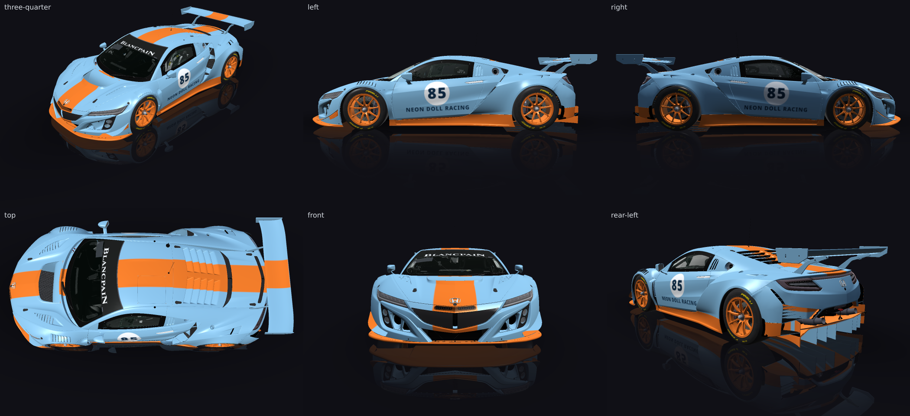

Gulf-style, number 85, Neon Doll Racing, number readable from trackside. Use a white roundel with the number inside it, whole and fully visible, clear of every edge. An orange centre stripe runs the full length of the car, nose to tail, continuing over the rear wing.
passed in round 1 — in the editor's inbox, for a person to accept or discard
render pass · fitment pass · critic pass
Gulf-style livery for the Honda NSX GT3 Evo: powder-blue body, orange 450 mm centre stripe running nose to tail and over the rear wing (pieces laid out by find_space and tied by the "centre" stripe constraint), orange ground-effect kit (splitter, skirts, diffuser) and orange rims. Each door carries a white roundel with number 85 in dark navy (166 mm capitals) and NEON DOLL RACING below it, laid out by find_space with a 30 mm margin, minOnCar/minVisible 1 on the roundel and groupWith on the names. Round 1: only the lettering colour was changed after the contrast check (navy instead of blue-on-white / white-on-blue). check_fitment: 0 fatal, 0 high.
